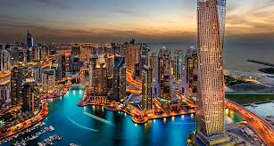

Olá, sou Carlos Henrique, sou um jovem de 23 anos natural de Presidente Vargas, no interior do Maranhão. Atualmente, estou morando em São Luís, onde trabalho e estudo na Uninter. Saí da minha cidade natal em 2018 para poder estudar, desde então me dedico a aprender e crescer profissionalmente. Tenho interesse em diversas áreas, mas minha paixão é por tecnologia, principalmente progamação. Busco sempre me atualizar e aprender coisas novas. Vou trabalhar duro pra alcançar meus objetivos e fazer a diferença pra minha família e comunidade.
Tenho muitos hobbies que deixam o meu dia mais leve, entre eles posso citar:
Um dos meus maiores sonhos é viajar pelo mundo e conhecer diferentes nações, culturas e modos de viver. Acredito que viajar é uma forma de enriquecer a mente, além é claro, de ser uma experiência incrível. Dentre os países que eu gostaria de conhecer, posso citar três que chamam muito minha atenção.
| País | Imagem |
|---|---|
| Japão | |
| França | |
| Emirados Árabes |  |
Além de viajar, gosto muito de me manter informado sobre o que acontece no mundo. Sempre busco fontes confiáveis e atualizadas para me manter por dentro das no tícias. Uma das minhas fontes favoritas é a CNN Brasil, pois eles oferecem sempre uma cobertura completa sobre qualquer assunto. Já que voçê está aqui, aproveita e dá uma olhada no site deles, sei que vai gostar também!
Neste link você fica por dentro de todas as notícias do Brasil e do mundo.
https://www.cnnbrasil.com.br <